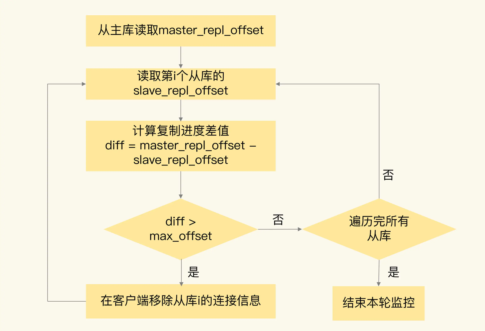

- 00 开篇词 这样学Redis，才能技高一筹.md
- 01 基本架构：一个键值数据库包含什么？.md
- 02 数据结构：快速的Redis有哪些慢操作？.md
- 03 高性能IO模型：为什么单线程Redis能那么快？.md
- 04 AOF日志：宕机了，Redis如何避免数据丢失？.md
- 05 内存快照：宕机后，Redis如何实现快速恢复？.md
- 06 数据同步：主从库如何实现数据一致？.md
- 07 哨兵机制：主库挂了，如何不间断服务？.md
- 08 哨兵集群：哨兵挂了，主从库还能切换吗？.md
- 09 切片集群：数据增多了，是该加内存还是加实例？.md
- 10 第1～9讲课后思考题答案及常见问题答疑.md
- 11 “万金油”的String，为什么不好用了？.md
- 12 有一亿个keys要统计，应该用哪种集合？.md
- 13 GEO是什么？还可以定义新的数据类型吗？.md
- 14 如何在Redis中保存时间序列数据？.md
- 15 消息队列的考验：Redis有哪些解决方案？.md
- 16 异步机制：如何避免单线程模型的阻塞？.md
- 17 为什么CPU结构也会影响Redis的性能？.md
- 18 波动的响应延迟：如何应对变慢的Redis？（上）.md
- 19 波动的响应延迟：如何应对变慢的Redis？（下）.md
- 20 删除数据后，为什么内存占用率还是很高？.md
- 21 缓冲区：一个可能引发“惨案”的地方.md
- 22 第11～21讲课后思考题答案及常见问题答疑.md
- 23 旁路缓存：Redis是如何工作的？.md
- 24 替换策略：缓存满了怎么办？.md
- 25 缓存异常（上）：如何解决缓存和数据库的数据不一致问题？.md
- 26 缓存异常（下）：如何解决缓存雪崩、击穿、穿透难题？.md
- 27 缓存被污染了，该怎么办？.md
- 28 Pika：如何基于SSD实现大容量Redis？.md
- 29 无锁的原子操作：Redis如何应对并发访问？.md
- 30 如何使用Redis实现分布式锁？.md
- 31 事务机制：Redis能实现ACID属性吗？.md
- 32 Redis主从同步与故障切换，有哪些坑？.md
- 33 脑裂：一次奇怪的数据丢失.md
- 34 第23~33讲课后思考题答案及常见问题答疑.md
- 35 Codis VS Redis Cluster：我该选择哪一个集群方案？.md
- 36 Redis支撑秒杀场景的关键技术和实践都有哪些？.md
- 37 数据分布优化：如何应对数据倾斜？.md
- 38 通信开销：限制Redis Cluster规模的关键因素.md
- 39 Redis 6.0的新特性：多线程、客户端缓存与安全.md
- 40 Redis的下一步：基于NVM内存的实践.md
- 41 第35～40讲课后思考题答案及常见问题答疑.md
- 加餐 01 经典的Redis学习资料有哪些？.md
- 加餐 02 用户Kaito：我是如何学习Redis的？.md
- 加餐 03 用户Kaito：我希望成为在压力中成长的人.md
- 加餐 04 Redis客户端如何与服务器端交换命令和数据？.md
- 加餐 05 Redis有哪些好用的运维工具？.md
- 加餐 06 Redis的使用规范小建议.md
- 加餐 07 从微博的Redis实践中，我们可以学到哪些经验？.md
- 结束语 从学习Redis到向Redis学习.md
32 Redis主从同步与故障切换，有哪些坑？
Redis 的主从同步机制不仅可以让从库服务更多的读请求，分担主库的压力，而且还能在主库发生故障时，进行主从库切换，提供高可靠服务。
不过，在实际使用主从机制的时候，我们很容易踩到一些坑。这节课，我就向你介绍 3 个坑，分别是主从数据不一致、读到过期数据，以及配置项设置得不合理从而导致服务挂掉。
一旦踩到这些坑，业务应用不仅会读到错误数据，而且很可能会导致 Redis 无法正常使用，我们必须要全面地掌握这些坑的成因，提前准备一套规避方案。不过，即使不小心掉进了陷阱里，也不要担心，我还会给你介绍相应的解决方案。
好了，话不多说，下面我们先来看看第一个坑：主从数据不一致。
主从数据不一致
主从数据不一致，就是指客户端从从库中读取到的值和主库中的最新值并不一致。
举个例子，假设主从库之前保存的用户年龄值是 19，但是主库接收到了修改命令，已经把这个数据更新为 20 了，但是，从库中的值仍然是 19。那么，如果客户端从从库中读取用户年龄值，就会读到旧值。
那为啥会出现这个坑呢？其实这是因为主从库间的命令复制是异步进行的。
具体来说，在主从库命令传播阶段，主库收到新的写命令后，会发送给从库。但是，主库并不会等到从库实际执行完命令后，再把结果返回给客户端，而是主库自己在本地执行完命令后，就会向客户端返回结果了。如果从库还没有执行主库同步过来的命令，主从库间的数据就不一致了。
那在什么情况下，从库会滞后执行同步命令呢？其实，这里主要有两个原因。
一方面，主从库间的网络可能会有传输延迟，所以从库不能及时地收到主库发送的命令，从库上执行同步命令的时间就会被延后。
另一方面，即使从库及时收到了主库的命令，但是，也可能会因为正在处理其它复杂度高的命令（例如集合操作命令）而阻塞。此时，从库需要处理完当前的命令，才能执行主库发送的命令操作，这就会造成主从数据不一致。而在主库命令被滞后处理的这段时间内，主库本身可能又执行了新的写操作。这样一来，主从库间的数据不一致程度就会进一步加剧。
那么，我们该怎么应对呢？我给你提供两种方法。
首先，在硬件环境配置方面，我们要尽量保证主从库间的网络连接状况良好。例如，我们要避免把主从库部署在不同的机房，或者是避免把网络通信密集的应用（例如数据分析应用）和 Redis 主从库部署在一起。
另外，我们还可以开发一个外部程序来监控主从库间的复制进度。
因为 Redis 的 INFO replication 命令可以查看主库接收写命令的进度信息（master_repl_offset）和从库复制写命令的进度信息（slave_repl_offset），所以，我们就可以开发一个监控程序，先用 INFO replication 命令查到主、从库的进度，然后，我们用 master_repl_offset 减去 slave_repl_offset，这样就能得到从库和主库间的复制进度差值了。
如果某个从库的进度差值大于我们预设的阈值，我们可以让客户端不再和这个从库连接进行数据读取，这样就可以减少读到不一致数据的情况。不过，为了避免出现客户端和所有从库都不能连接的情况，我们需要把复制进度差值的阈值设置得大一些。
我们在应用 Redis 时，可以周期性地运行这个流程来监测主从库间的不一致情况。为了帮助你更好地理解这个方法，我画了一张流程图，你可以看下。

当然，监控程序可以一直监控着从库的复制进度，当从库的复制进度又赶上主库时，我们就允许客户端再次跟这些从库连接。
除了主从数据不一致以外，我们有时还会在从库中读到过期的数据，这是怎么回事呢？接下来，我们就来详细分析一下。
读取过期数据
我们在使用 Redis 主从集群时，有时会读到过期数据。例如，数据 X 的过期时间是 202010240900，但是客户端在 202010240910 时，仍然可以从从库中读到数据 X。一个数据过期后，应该是被删除的，客户端不能再读取到该数据，但是，Redis 为什么还能在从库中读到过期的数据呢？
其实，这是由 Redis 的过期数据删除策略引起的。我来给你具体解释下。
Redis 同时使用了两种策略来删除过期的数据，分别是惰性删除策略和定期删除策略。
先说惰性删除策略。当一个数据的过期时间到了以后，并不会立即删除数据，而是等到再有请求来读写这个数据时，对数据进行检查，如果发现数据已经过期了，再删除这个数据。
这个策略的好处是尽量减少删除操作对 CPU 资源的使用，对于用不到的数据，就不再浪费时间进行检查和删除了。但是，这个策略会导致大量已经过期的数据留存在内存中，占用较多的内存资源。所以，Redis 在使用这个策略的同时，还使用了第二种策略：定期删除策略。
定期删除策略是指，Redis 每隔一段时间（默认 100ms），就会随机选出一定数量的数据，检查它们是否过期，并把其中过期的数据删除，这样就可以及时释放一些内存。
清楚了这两个删除策略，我们再来看看它们为什么会导致读取到过期数据。
首先，虽然定期删除策略可以释放一些内存，但是，Redis 为了避免过多删除操作对性能产生影响，每次随机检查数据的数量并不多。如果过期数据很多，并且一直没有再被访问的话，这些数据就会留存在 Redis 实例中。业务应用之所以会读到过期数据，这些留存数据就是一个重要因素。
其次，惰性删除策略实现后，数据只有被再次访问时，才会被实际删除。如果客户端从主库上读取留存的过期数据，主库会触发删除操作，此时，客户端并不会读到过期数据。但是，从库本身不会执行删除操作，如果客户端在从库中访问留存的过期数据，从库并不会触发数据删除。那么，从库会给客户端返回过期数据吗？
这就和你使用的 Redis 版本有关了。如果你使用的是 Redis 3.2 之前的版本，那么，从库在服务读请求时，并不会判断数据是否过期，而是会返回过期数据。在 3.2 版本后，Redis 做了改进，如果读取的数据已经过期了，从库虽然不会删除，但是会返回空值，这就避免了客户端读到过期数据。所以，在应用主从集群时，尽量使用 Redis 3.2 及以上版本。
你可能会问，只要使用了 Redis 3.2 后的版本，就不会读到过期数据了吗？其实还是会的。
为啥会这样呢？这跟 Redis 用于设置过期时间的命令有关系，有些命令给数据设置的过期时间在从库上可能会被延后，导致应该过期的数据又在从库上被读取到了，我来给你具体解释下。
我先给你介绍下这些命令。设置数据过期时间的命令一共有 4 个，我们可以把它们分成两类：
- EXPIRE 和 PEXPIRE：它们给数据设置的是从命令执行时开始计算的存活时间；
- EXPIREAT 和 PEXPIREAT：它们会直接把数据的过期时间设置为具体的一个时间点。
这 4 个命令的参数和含义如下表所示：
为了方便你理解，我给你举两个例子。
第一个例子是使用 EXPIRE 命令，当执行下面的命令时，我们就把 testkey 的过期时间设置为 60s 后。
EXPIRE testkey 60
第二个例子是使用 EXPIREAT 命令，例如，我们执行下面的命令，就可以让 testkey 在 2020 年 10 月 24 日上午 9 点过期，命令中的 1603501200 就是以秒数时间戳表示的 10 月 24 日上午 9 点。
EXPIREAT testkey 1603501200
好了，知道了这些命令，下面我们来看看这些命令如何导致读到过期数据。
当主从库全量同步时，如果主库接收到了一条 EXPIRE 命令，那么，主库会直接执行这条命令。这条命令会在全量同步完成后，发给从库执行。而从库在执行时，就会在当前时间的基础上加上数据的存活时间，这样一来，从库上数据的过期时间就会比主库上延后了。
这么说可能不太好理解，我再给你举个例子。
假设当前时间是 2020 年 10 月 24 日上午 9 点，主从库正在同步，主库收到了一条命令：EXPIRE testkey 60，这就表示，testkey 的过期时间就是 24 日上午 9 点 1 分，主库直接执行了这条命令。
但是，主从库全量同步花费了 2 分钟才完成。等从库开始执行这条命令时，时间已经是 9 点 2 分了。而 EXPIRE 命令是把 testkey 的过期时间设置为当前时间的 60s 后，也就是 9 点 3 分。如果客户端在 9 点 2 分 30 秒时在从库上读取 testkey，仍然可以读到 testkey 的值。但是，testkey 实际上已经过期了。
为了避免这种情况，我给你的建议是，在业务应用中使用 EXPIREAT/PEXPIREAT 命令，把数据的过期时间设置为具体的时间点，避免读到过期数据。
好了，我们先简单地总结下刚刚学过的这两个典型的坑。
- 主从数据不一致。Redis 采用的是异步复制，所以无法实现强一致性保证（主从数据时时刻刻保持一致），数据不一致是难以避免的。我给你提供了应对方法：保证良好网络环境，以及使用程序监控从库复制进度，一旦从库复制进度超过阈值，不让客户端连接从库。
- 对于读到过期数据，这是可以提前规避的，一个方法是，使用 Redis 3.2 及以上版本；另外，你也可以使用 EXPIREAT/PEXPIREAT 命令设置过期时间，避免从库上的数据过期时间滞后。不过，这里有个地方需要注意下，因为 EXPIREAT/PEXPIREAT 设置的是时间点，所以，主从节点上的时钟要保持一致，具体的做法是，让主从节点和相同的 NTP 服务器（时间服务器）进行时钟同步。
除了同步过程中有坑以外，主从故障切换时，也会因为配置不合理而踩坑。接下来，我向你介绍两个服务挂掉的情况，都是由不合理配置项引起的。
不合理配置项导致的服务挂掉
这里涉及到的配置项有两个，分别是 protected-mode 和 cluster-node-timeout。
- protected-mode 配置项
这个配置项的作用是限定哨兵实例能否被其他服务器访问。当这个配置项设置为 yes 时，哨兵实例只能在部署的服务器本地进行访问。当设置为 no 时，其他服务器也可以访问这个哨兵实例。
正因为这样，如果 protected-mode 被设置为 yes，而其余哨兵实例部署在其它服务器，那么，这些哨兵实例间就无法通信。当主库故障时，哨兵无法判断主库下线，也无法进行主从切换，最终 Redis 服务不可用。
所以，我们在应用主从集群时，要注意将 protected-mode 配置项设置为 no，并且将 bind 配置项设置为其它哨兵实例的 IP 地址。这样一来，只有在 bind 中设置了 IP 地址的哨兵，才可以访问当前实例，既保证了实例间能够通信进行主从切换，也保证了哨兵的安全性。
我们来看一个简单的小例子。如果设置了下面的配置项，那么，部署在 192.168.10.3/4/5 这三台服务器上的哨兵实例就可以相互通信，执行主从切换。
protected-mode no
bind 192.168.10.3 192.168.10.4 192.168.10.5
- cluster-node-timeout 配置项
这个配置项设置了 Redis Cluster 中实例响应心跳消息的超时时间。
当我们在 Redis Cluster 集群中为每个实例配置了“一主一从”模式时，如果主实例发生故障，从实例会切换为主实例，受网络延迟和切换操作执行的影响，切换时间可能较长，就会导致实例的心跳超时（超出 cluster-node-timeout）。实例超时后，就会被 Redis Cluster 判断为异常。而 Redis Cluster 正常运行的条件就是，有半数以上的实例都能正常运行。
所以，如果执行主从切换的实例超过半数，而主从切换时间又过长的话，就可能有半数以上的实例心跳超时，从而可能导致整个集群挂掉。所以，我建议你将 cluster-node-timeout 调大些（例如 10 到 20 秒）。
小结
这节课，我们学习了 Redis 主从库同步时可能出现的 3 个坑，分别是主从数据不一致、读取到过期数据和不合理配置项导致服务挂掉。
为了方便你掌握，我把这些坑的成因和解决方法汇总在下面的这张表中，你可以再回顾下。

最后，关于主从库数据不一致的问题，我还想再给你提一个小建议：Redis 中的 slave-serve-stale-data 配置项设置了从库能否处理数据读写命令，你可以把它设置为 no。这样一来，从库只能服务 INFO、SLAVEOF 命令，这就可以避免在从库中读到不一致的数据了。
不过，你要注意下这个配置项和 slave-read-only 的区别，slave-read-only 是设置从库能否处理写命令，slave-read-only 设置为 yes 时，从库只能处理读请求，无法处理写请求，你可不要搞混了。
每课一问
按照惯例，我给你提个小问题，我们把 slave-read-only 设置为 no，让从库也能直接删除数据，以此来避免读到过期数据，你觉得，这是一个好方法吗？
欢迎在留言区写下你的思考和答案，我们一起交流讨论。如果你觉得今天的内容对你有所帮助，也欢迎你分享给你的朋友或同事。我们下节课见。
© 2019 - 2023 Liangliang Lee. Powered by Vert.x and hexo-theme-book.